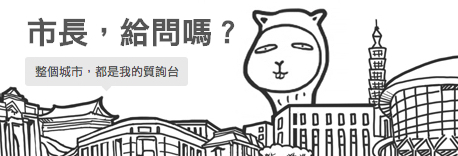
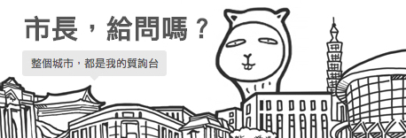

“沃草的核心目標是
「讓更多人一起來參與公民社會」；
「沃草」象徵著
「公民社會的肥沃草原」。”
我們有一個很簡單而實際的夢想：我們相信台灣可以更好，而讓台灣更好的力量來自於更多主動參與、向外關注的公民。
沃草的英文名字「Watchout」，原意是「提防」和「警戒」，只要我們每個小小公民都能時時張大眼睛、提防警戒，政客就不容易為所欲為。
一個成熟的公民社會，絕對不能只靠少數人付出一切去投入在社會運動之中。每個人只要一起付出各自一小部分的時間心力，就能改變這個社會，更接近那個你我嚮往的理想樂土一步。
沃草希望做一個農夫，提供公民更好的參與時政的平台和工具，在這公民社會的土壤施肥灌溉，讓這個理想的種子在每個人心中萌芽滋長，建立真正的公民社會。

我們認為，公民應該監督立法院與民意代表，因為我們都有能讓國家更好的權利，而我們應該為了自己、也為了自己珍惜的理念和人們，行使我們的權力。
國會無雙是一個想要盡可能降低公民監督立院的門檻的網站，包括：賽事直播、戰報、場邊焦點、重大議題、精彩事蹟、觀賽重點、立院小知識等功能與內容。
「國會無雙」是沃草的第一個產品；目前，我們也正在構想關於媒體、公民教育、人力資源...等等的計劃。沃草是為了每一個想多參與公民社會的你所存在的，所以，如果你有什麼想法和建議，請務必要讓我們知道！
 

相信許多人對台灣的選舉都有印象。
飄揚的旗海、到處廣播的競選車輛、到處上台致詞的候選人，盛大的造勢大會，還有電視辯論會。
候選人出現在各種場合到處和人招手，握手。可是，候選人聽的到選民的聲音嗎？各位朋友，你如果對候選人有意見，有沒有辦法提出來讓他回答嗎？
沃草公司推出了「市長，給問嗎？」網站。我們希望每個人都可以擁有向未來市長提問的權利。同時，我們將會在市長選舉完成後，保留這個候選人的所有回答供大家驗證：這個市長是否如他所說的這樣守信用。
只要用 Facebook 的帳號驗證登入之後，就可以在上面針對您指定的候選人提問。如果您喜歡其他人的問題，也可以去其他人的問題底下連署。愈多人連署的問題，也就有更多機會被注意。
我們不要傳統的口水戰、文宣戰、旗海戰；不依賴投票前兩個禮拜才舉辦的政見辯論會；不單單只是憑藉著黨籍、省籍、性別、或者外表，就決定要投給誰；更不當只負責投票的「一日公民」。
今年，你不必是媒體代表、知名人士，才能對候選人提問。每一個市井小民，都有一樣的發言權；當你說出了市民共同的心聲，候選人就必須嚴肅看待、認真回應。提問和回應都將被公開檢視與討論。
「市長，給問嗎？」有別於過往的電話或投書反應。這是一個公開的平台，讓市民聲音得以串聯、共鳴，形成更大的力量。
我們相信，你有權利也有義務參與這一次的討論，選出最符合你價值理念的候選人。因為政治不是「政治人物」或「社運人士」的事，政治關乎你我的生活，政治是我們的事。
我們是平均年齡 30 歲以下的年輕團隊，也許經驗不多，但我們有比別人多的熱情。
我們有醫學、法律、經濟、數學、設計、哲學、傳播、資工、財金等不同領域的夥伴。
我們有點宅，不過從當阿宅中，我們發想了許多好玩有趣的哏。
我們想試試看另一種社會運動的模式，這是我們的實驗精神。
我們喜歡學習——不管是不是我們原先的主修或專長。
我們不斷讓自己成長，因為我們想讓公民社會更有力量。
我們相信，想看到不同的結果，就得嘗試新的做法。
其實，我們的姓名並不重要，因為我們就是你——
一個不放棄讓台灣變得更好的公民。

沃草有限公司 Watchout, Co.
地址：100 台北市中正區懷寧街92號7樓
電話：02-2361-7588
電子郵件：info@watchout.tw
網站：http://watchout.tw